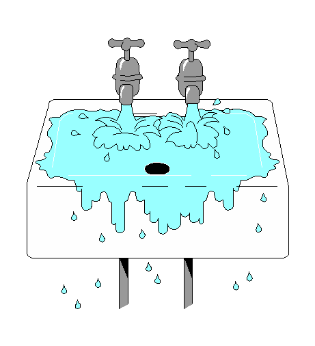

Kitchen Sink

The Scenario
- Block the drain, turn on the water, overflow, and spill
Water level rises 1 unit per unit time
- Temporal projection using all features of DEC
- 54 axioms and the conjecture
Results
- Easy to prove basic results, e.g., filling at time 2
- More difficult as time progresses, e.g., filling at time 3
- Cannot prove (in 300s) at end, e.g., spilling at time 4
- Used previously proved theorems as lemmas